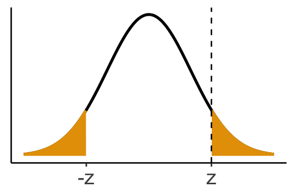
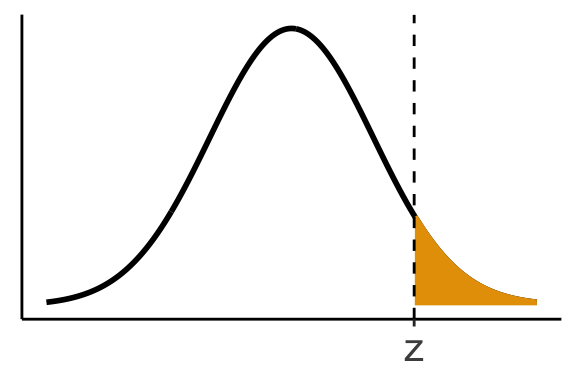
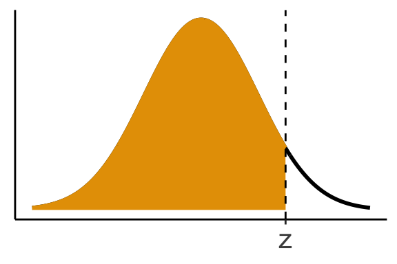

Chapter 10: Categorical Data
Introduction
Categorical Variable
A variable that groups units into different categories.
Examples:
- Oral contraceptive user vs. Non-OC-user
- Has cancer vs. Does not have cancer
There are lots of inference problems that are interesting using categorical variables:
Example 1: Test if cancer incidence is the same between OC users and non-OC users.
- Test the association between two categorical variables (cancer status and OC status).
Example 2: Test if heavy OC users, light OC users, and non-OC users have the same cancer rates.
- Same as exame 1 above, but now OC status has three categories instead of 2.
Example 3: Are the observed frequencies below consistent with the theoretical probabilities?
Diastolic Blood Pressure Frequency Expected Probability < 50 57 1% ≥ 50, < 60 330 7% ≥ 60, < 70 2132 30% ≥ 70, < 80 4584 62%
Two-sample Test for Binomial Proportions
Example: Age at first birth vs. breast cancer incidence.
Control (No Cancer) Case (Cancer) Age at 1st birth ≤ 29 years 8747 2537 Age at 1st birth ≥ 30 years 1498 683 Total 10245 3220 Data collection scheme: Chose women with cancer and women without cancer, then measured age of their first births
Goal: Test if cancer is associated with age.
Two populations:
- Those with cancer
- Those without cancer
Let:
- \(p_1 = P(\text{age} \geq 30 \mid \text{cancer})\)
- \(p_2 = P(\text{age} \geq 30 \mid \text{no cancer})\)
Hypotheses:
- \(H_0\): \(p_1 = p_2\) vs. \(H_1\): \(p_1 \neq p_2\)
Sample proportions:
- \(\hat{p}_1 = \frac{683}{3220} = 0.212\)
- \(\hat{p}_2 = \frac{1498}{10245} = 0.146\)
Idea: Base test on \(\hat{p}_1 - \hat{p}_2\).
Let:
- \(X_1\) = number of women age \(\geq 30\) with cancer
- \(X_2\) = number of women age \(\geq 30\) without cancer
\(X_1 \sim \text{Binom}(n_1, p_1)\), where \(n_1 = 3220\)
- \(\hat{p}_1 = X_1 / n_1\)
\(X_2 \sim \text{Binom}(n_2, p_2)\), where \(n_2 = 10245\)
- \(\hat{p}_2 = X_2 / n_2\)
We have very large sample sizes, so we can use normal theory.
- \(\hat{p}_1 \sim N\left(p_1, \frac{1}{n_1} p_1 (1 - p_1) \right)\)
- \(\hat{p}_2 \sim N\left(p_2, \frac{1}{n_2} p_2 (1 - p_2) \right)\)
Under, \(H_0\), \(p_1 = p_2 = p\), so
- \(\hat{p}_1 \sim N\left(p, \frac{1}{n_1} p (1 - p) \right)\)
- \(\hat{p}_2 \sim N\left(p, \frac{1}{n_2} p (1 - p) \right)\)
Thus, \[ \hat{p}_1 - \hat{p}_2 \sim N\left(0, \left(\frac{1}{n_1} + \frac{1}{n_2} \right)p(1 - p)\right) \]
So we divide by the standard error to get a \(z\) statistic that follows a standard normal distribution (but only if \(H_0\) is true): \[ \frac{\hat{p}_1 - \hat{p}_2}{\sqrt{\left( \frac{1}{n_1} + \frac{1}{n_2} \right)p(1 - p)}} \sim N(0,1) \]
We estimate \(p\) under \(H_0\) by noting that, if \(H_0\) were ture, then \[ X_1 + X_2 \sim \text{Binom}(n_1 + n_2, p) \] Thus, \[ \hat{p} = \frac{X_1 + X_2}{n_1 + n_2} \]
Plugging in \(\hat{p}\) for \(p\) we get something that is asymptotically standard normal \[ \frac{\hat{p}_1 - \hat{p}_2}{\sqrt{\left( \frac{1}{n_1} + \frac{1}{n_2} \right)\hat{p}(1 - \hat{p})}} \sim N(0,1) \]
Note: don’t use the \(t\)-distribution here. That depends on the data actually being normal.
In practice, we need to do a continuity correction for better performance.
Two-sample Binomial Test
Observe \(X_1 \sim \mathrm{Binom}(n_1,p_1)\) and \(X_2 \sim \mathrm{Binom}(n_2, p_2)\)
- Null Hypothesis: \(H_0: p_1 = p_2\)
Calculate - \(\hat{p_1} = X_1 / n_1\) - \(\hat{p_2} = X_2 / n_2\) - \(\hat{p} = (X_1 + X_2) / (n_1 + n_2)\)
\(z\)-statistic \[ z = \frac{\hat{p}_1 - \hat{p}_2}{\sqrt{\left( \frac{1}{n_1} + \frac{1}{n_2} \right)\hat{p}(1 - \hat{p})}} \]
\(H_1: p_1 \neq p_2\) \[ \text{p-value} = 2 \times \texttt{pnorm}(-|z|) \]
\(H_1: p_1 > p_2\) \[ \text{p-value} = 1 - \texttt{pnorm}(z) \]

\(H_1: p_1 < p_2\) \[ \text{p-value} = \texttt{pnorm}(z) \]

A \((1 - \alpha)100\%\) confidence interval for the difference is \[ \hat{p}_1 - \hat{p_2} \pm z_{1-\alpha/2}\sqrt{\left( \frac{1}{n_1} + \frac{1}{n_2} \right)\hat{p}(1 - \hat{p})} \]
Rule of thumb: The normal approximation works if \(n_1\hat{p}(1-\hat{p}) \geq 5\) and \(n_2\hat{p}(1-\hat{p}) \geq 5\)
- Age at first birth vs cancer example continued:
\(X_1 = 683\), \(n_1 = 3220\)
\(X_2 = 1498\), \(n_2 = 10245\)
\(\hat{p}_1 = 683/3220 = 0.2121\)
\(\hat{p}_2 = 1498 / 10245 = 0.1462\)
\(\hat{p} = (683 + 1498) / (3220 + 10245) = 0.162\)
Test statistic: \[ z = \frac{\hat{p}_1 - \hat{p}_2}{\sqrt{\left( \frac{1}{n_1} + \frac{1}{n_2} \right)\hat{p}(1 - \hat{p})}} = \frac{0.2121 - 0.1462}{\sqrt{\left( \frac{1}{3220} + \frac{1}{10245} \right)(0.162)(1 - 0.162)}} = 8.866 \]
p-value:
2 * pnorm(-8.866)[1] 7.582e-19We have strong evidence that women with cancer are more likely to have had their first child after age 30.
Test for Homogeneity in 2 \(\times\) 2 Tables
What I showed before was a \(2 \times 2\) contingency table:
Status Age ≥ 30 Age < 30 Row Total Case 683 2537 3220 Control 1498 8747 10245 Col Total 2181 11284 13465 Row margins and column margins are shown above. The total is the grand total.
An equivalent (exact same \(p\)-value) method is to test for homogeneity or independence between the two variables.
Suppose our table looks like this:
Z = A Z = B Row Total W = C \(X_{11}\) \(X_{12}\) \(m_1\) W = D \(X_{21}\) \(X_{22}\) \(m_2\) Col Total \(n_1\) \(n_2\) \(N\) Definitions:
- \(Z\) is a variable with possible values of \(A\) and \(B\)
- \(W\) is a variable with possible values \(C\) and \(D\).
- \(n_1 = X_{11} + X_{21}\)
- \(n_2 = X_{12} + X_{22}\)
- \(m_1 = X_{11} + X_{12}\)
- \(m_2 = X_{21} + X_{22}\)
- \(N = n_1 + n_2 = m_1 + m_2\)
If \(Z \perp W\), then:
- \(P(Z = A \cap W = C) = P(Z = A) \cdot P(W = C)\)
- \(P(Z = A \cap W = D) = P(Z = A) \cdot P(W = D)\)
- \(P(Z = b \cap W = C) = P(Z = b) \cdot P(W = C)\)
- \(P(Z = b \cap W = D) = P(Z = b) \cdot P(W = D)\)
Idea: Calculate expected counts from the assumption of independendence based on the margin totals.
- \(P(Z = A) = \frac{n_1}{N}\)
- \(P(Z = B) = \frac{n_2}{N}\)
- \(P(W = C) = \frac{m_1}{N}\)
- \(P(W = D) = \frac{m_2}{N}\)
The expected count under independence:
- \(E[X_{11} \mid Z \perp W] = N \Pr(Z = A \cap W = C) = N\Pr(Z = A)\Pr(W=C) = N \cdot \frac{n_1}{N} \cdot \frac{m_1}{N} = \frac{n_1 m_1}{N}\)
- \(E[X_{12} \mid Z \perp W] = N \Pr(Z = B \cap W = C) = N\Pr(Z = B)\Pr(W=C) = N \cdot \frac{n_2}{N} \cdot \frac{m_1}{N} = \frac{n_2 m_1}{N}\)
- \(E[X_{21} \mid Z \perp W] = N \Pr(Z = A \cap W = D) = N\Pr(Z = A)\Pr(W=D) = N \cdot \frac{n_1}{N} \cdot \frac{m_2}{N} = \frac{n_1 m_2}{N}\)
- \(E[X_{22} \mid Z \perp W] = N \Pr(Z = B \cap W = D) = N\Pr(Z = A)\Pr(W=C) = N \cdot \frac{n_2}{N} \cdot \frac{m_2}{N} = \frac{n_2 m_2}{N}\)
Compare \(X_{ij}\) to the expected value of \(X_{ij}\) if variables were independent.
Expected counts from age at first birth example:
≥ 30 < 30 Case \(\frac{2181 \cdot 3220}{13465}\) \(\frac{11284 \cdot 3220}{13465}\) Control \(\frac{2181 \cdot 10245}{13465}\) \(\frac{11284 \cdot 10245}{13465}\) This results in:
≥ 30 < 30 Case 521.6 2698.4 Control 1659.4 8585.6 How do these compare to observed counts?
Whenever you compare observed counts to expected counts, do a Pearson \(\chi^2\) test.
\[ X^2 = \sum_{\text{categories}} \frac{(O - E)^2}{E} \]
- \(O\) = observed count
- \(E\) = expected count
If \(H_0\) is true, then \(X^2 \sim \chi^2_\nu\)
- \(\nu\) = degrees of freedom
For a test of homogeneity in \(2 \times 2\) tables, \(\nu = 1\)
Birth example:
\[ X^2 = \frac{(683 - 521.6)^2}{521.6} + \frac{(2537 - 2698.4)^2}{2698.4} + \frac{(1498 - 1659.4)^2}{1659.4} + \frac{(8747 - 8585.6)^2}{8585.6} = 77.89 \]
In R:
1 - pchisq(77.89, df = 1)[1] 0It’s more numerically accurate to use
lower.tail = FALSEbecause R has better precision for numbers close to 0 than for numbers close to 1.pchisq(77.89, df = 1, lower.tail = FALSE)[1] 1.089e-18
What are the expected counts of the following OC use vs. MI table?
| OC Use | MI Yes | MI No | Row Total |
|---|---|---|---|
| Yes | 13 | 4987 | 5000 |
| No | 7 | 9993 | 10000 |
| Col Total | 20 | 14980 | 15000 |
Use:
\[
E = \frac{\text{row total} \cdot \text{column total}}{\text{grand total}}
\]
Apply for each cell.
| OC Use | MI Yes | MI No |
|---|---|---|
| Yes | \(\frac{20 \cdot 5000}{15000}\) | \(\frac{14980 \cdot 5000}{15000}\) |
| No | \(\frac{20 \cdot 10000}{15000}\) | \(\frac{14980 \cdot 10000}{15000}\) |
| OC Use | MI Yes | MI No |
|---|---|---|
| Yes | 6.7 | 4993.3 |
| No | 13.3 | 9986.7 |
Calculate the \(\chi^2\) statistic from the previous exercise.
Chi-squared test statistic:
\[ \chi^2 = \frac{(13 - 6.7)^2}{6.7} + \frac{(4987 - 4993.3)^2}{4993.3} + \frac{(7 - 13.3)^2}{13.3} + \frac{(9993 - 9986.7)^2}{9986.7} = 8.92 \]
Contingency test perspective in R
Fisher’s Exact Test
What if \(n\) is small?
Rule of thumb for “small”: Any expected count \(< 5\)
- It’s OK if the observed counts are \(< 5\).
Example: Salt diet vs. cardiovascular disease (CVD) death
Cause of Death High Salt Low Salt Row Total Non-CVD 2 23 25 CVD 5 30 35 Col Total 7 53 60 Expected count for top-left cell: \[ E_{11} = \frac{7 \cdot 25}{60} = 2.92 < 5 \]
- Use \(2.92\) (not \(2\)) to determine normality approximation validity.
Exact Test
An exact test is one that controls Type I error for any \(n\), not just large \(n\).
Fisher’s Exact Test
- Fix the margin totals.
- Enumerate all possible tables with those same margin totals.
- Each table has a known probability (under \(H_0\)).
- Find how likely our observed table is (if \(H_0\) true) by summing over all tables less than or as probable as our observed table.
To find all tables that maintain margin totals, you can start from your observed table and perform one of these two operations until the operations become impossible (because doing so would create negative counts).
\[ \pmatrix{x_{11} - 1 & x_{12} + 1 \\ x_{21} + 1 & x_{22} - 1} \] or \[ \pmatrix{x_{11} + 1 & x_{12} - 1 \\ x_{21} - 1 & x_{22} + 1} \]
Our observe table is
\[ \pmatrix{2 & 23 \\ 5 & 30} \]
All possible \(2 \times 2\) tables with the exact same margins
Table Probability Under Null \(\pmatrix{0 & 25 \\ 7 & 28}\) 0.017 \(\pmatrix{1 & 24 \\ 6 & 29}\) 0.105 \(\pmatrix{2 & 23 \\ 5 & 30}\) 0.252 (observed table) \(\pmatrix{3 & 22 \\ 4 & 31}\) 0.312 \(\pmatrix{4 & 21 \\ 3 & 32}\) 0.214 \(\pmatrix{5 & 20 \\ 2 & 33}\) 0.082 \(\pmatrix{6 & 19 \\ 1 & 34}\) 0.016 \(\pmatrix{7 & 18 \\ 0 & 35}\) 0.001 Sum all probabilities \(\leq\) the observed one (in bold) to get the p-value.
These probabilities come from the hypergeometric distribution (we won’t cover the exact formula).
What are the possible tables with fixed margins from the following?
\[ \pmatrix{2 & 1 \\ 2 & 2} \]
- Valid tables with these margins:
- \(\pmatrix{3 & 0 \\ 1 & 3}\)
- \(\pmatrix{2 & 1 \\ 2 & 2}\)
- \(\pmatrix{1 & 2 \\ 3 & 1}\)
- \(\pmatrix{0 & 3 \\ 4 & 0}\)
McNemar’s Test
Used for matched samples where each unit has two binary outcomes.
Study design: Have matched samples, each with two binary variables.
Example:
- Treatment A vs. Treatment B
- Survive vs. Not
- Treatment A vs. Treatment B
Procedure:
- Choose a woman to go into A.
- Match another woman with similar characteristics to go into B.
- Observe survival for both.
“Similar characteristics”: age, weight, clinical condition, etc.
Naive Way: Treat each individual as an independent unit and use:
| Treatment | Survive | Die | Total |
|---|---|---|---|
| A | 526 | 95 | 621 |
| B | 515 | 106 | 621 |
| Total | 1041 | 201 | 1242 |
You could run a \(\chi^2\) test for homogeneity, but this is wrong — the data are matched, not independent.
Instead, use a matched-pair contingency table.
Pair structure:
| B: Survive | B: Die | |
|---|---|---|
| A: Survive | ||
| A: Die |
For example, if Pair 1: A = Y, B = N
→ contributes to (A:Y, B:N) cell.Use this matched format to apply McNemar’s Test.
Correct way: Each matched pair is a unit
| A Outcome B Outcome | Survive | Die | Total |
|---|---|---|---|
| Survive | 510 | 16 | 526 |
| Die | 5 | 90 | 95 |
| Total | 515 | 106 | 621 |
Concordant pair: Same outcome (both survive or both die)
Discordant pair: Different outcomes (one dies, one survives)
Concordant pairs tell you nothing about which treatment is better.
Test whether the two discordant cells have approximately the same counts.
Let:
- \(X\) = number of pairs where A survives and B dies
- \(n\) = number of discordant pairs
\[ X \sim \text{Binom}(n, p) \]
- Hypotheses:
- \(H_0\): \(p = \frac{1}{2}\) (treatments A and B equally effective)
- \(H_1\): \(p \ne \frac{1}{2}\)
Note
Don’t use \(\chi^2\) on this table because we know observations are associated (matched).
We only want to know which treatment does better.
- Just use binomial methods on discordant pairs.
- Use normal approximation for large counts
- Use exact test for small counts
McNemar’s Test in R
Hypertension diagnosis: Each person is assessed (1) by trained observer and (2) by a machine.
Each person is a unit and the assessments are matched.
Test if they give the same result (on average).
| Trained + | Trained − | |
|---|---|---|
| Machine + | 3 | 7 |
| Machine − | 1 | 9 |
Only discordant pairs (7 and 1) matter.
Let: - \(X \sim \text{Binom}(8, p)\) (discordant total = 8) - \(H_0: p = \frac{1}{2}\) vs. \(H_1: p \ne \frac{1}{2}\)
Run binomial test in R:
binom.test(x = 7, n = 8, p = 0.5)Cannot use mcnemar.test() here because it uses a normal approximation.
- Summary: If you can group individuals into concordant vs. discordant pairs, then use McNemar’s test.
Skip Power calculations §10.5
Larger Contingency Tables
- Instead of 2 binary variables, we now have 2 categorical variables.
- Variable 1 has \(R\) levels
- Variable 2 has \(C\) levels
- Variable 1 has \(R\) levels
- Example: Cancer vs. Age at First Birth
| Age | < 20 | 20–24 | 25–29 | 30–34 | ≥ 35 | Total |
|---|---|---|---|---|---|---|
| Case | 326 | 1206 | 1011 | 463 | 220 | 3226 |
| Control | 1422 | 4432 | 2893 | 1092 | 906 | 10245 |
| Total | 1748 | 5638 | 3904 | 1555 | 1126 | 13465 |
\(H_0\): Cancer status ⟂ Age at first birth
\(H_1\): The two variables are related
Use the same contingency table approach as for \(2 \times 2\) tables:
- Calculate expected counts assuming independence
- Compare to observed counts using \(\chi^2\) statistic:
\[ \chi^2 = \sum_{\text{cells}} \frac{(O - E)^2}{E} \]
- \(\chi^2 \sim \chi^2_\nu\) if \(H_0\) is true
- Degrees of freedom: \[ \nu = (R - 1)(C - 1) \]
XYZ IMAGE HERE
- Example expected cell computations:
\[ E_{11} = \frac{1742 \cdot 3220}{13465} = 416.6 \] - \(P(\text{<20}) \cdot P(\text{case})\)
\[ E_{12} = \frac{1742 \cdot 10245}{13465} = 1348.3 \] - \(P(\text{<20}) \cdot P(\text{control})\)
Compute \(E_{25}\):
\[ E_{25} = \frac{626 \cdot 10245}{13465} = 476.3 \]
Plug into \(\chi^2\) formula:
\[ \chi^2 = \sum_{\text{cell}} \frac{(O - E)^2}{E} = \frac{(416.6 - 326)^2}{416.6} + \cdots + \frac{(476.3 - 406)^2}{476.3} = 130.3 \]
Degrees of freedom: \[ \nu = (2 - 1)(5 - 1) = 4 \]
R code:
pchisq(130.3, df = 4, lower.tail = FALSE)Larger contingency tables in R
Skip: \(\chi^2\) test for trend
\(\chi^2\) Goodness-of-Fit Test
The \(\chi^2\) tests of homogeneity are special cases of \(\chi^2\) goodness-of-fit tests.
Let \(e\) be the expected counts under the null hypothesis.
Then: \[ \chi^2 = \sum_{\text{categories}} \frac{(e - o)^2}{e}, \quad o = \text{observed count} \]Under \(H_0\), \(\chi^2 \sim \chi^2_\nu\)
Degrees of freedom: \[ \nu = \text{\# parameters under } H_1 - \text{\# parameters under } H_0 \]
\(H_1\) usually has more parameters (is more complex).
Example: \(2 \times 2\) Table
| C | D | |
|---|---|---|
| A | \(x_{11}\) | \(x_{12}\) |
| B | \(x_{21}\) | \(x_{22}\) |
\(H_0\): Independence
- 2 parameters:
- \(P(A)\), \(P(C)\)
- \(P(B) = 1 - P(A)\)
- \(P(D) = 1 - P(C)\)
- 2 parameters:
\(H_1\): Association
- 3 parameters:
- \(P(A \cap C)\), \(P(A \cap D)\), \(P(B \cap C)\)
- \(P(B \cap D) = 1 - \left[ P(A \cap C) + P(A \cap D) + P(B \cap C) \right]\)
- 3 parameters:
So: \[ \nu = 3 - 2 = 1 \]
Cohen’s Kappa
Want a measure of how reliable a test is
Or measure how similar two judges rate something
Example: 2 surveys measuring beef consumption
| Survey 2: ≤ 1 serving/week | Survey 2: > 1 serving/week | Total | |
|---|---|---|---|
| Survey 1: ≤ 1 serving/week | 136 | 92 | 228 |
| Survey 1: > 1 serving/week | 64 | 240 | 304 |
| Total | 205 | 332 | 537 |
Idea: The “amount” of concordance reflects reliability of the survey
Observed proportion concordant: \[ p_o = \frac{136 + 240}{537} = 0.7 \]
Expected concordance under independence: \[ p_e = \frac{205 \cdot 228}{537^2} + \frac{332 \cdot 304}{537^2} = 0.518 \]
Cohen’s kappa: \[ \kappa = \frac{p_o - p_e}{1 - p_e} \]
Properties of Cohen’s Kappa
Bounds: \[ \frac{-p_e}{1 - p_e} \leq \kappa \leq 1 \]
- Set \(p_o = 0\) or \(1\) for bounds.
\(\kappa = 1\) implies perfect concordance.
Rules of thumb:
- \(\kappa > 0.75\) → excellent reproducibility
- \(0.4 < \kappa \leq 0.75\) → good reproducibility
- \(0 \leq \kappa \leq 0.4\) → marginal reproducibility
Confidence intervals and tests for \(\kappa\) are possible.
Use \(\kappa\) for repeated measures of the same variable.
For two different variables, use sensitivity and specificity.
Cohen’s Kappa in R